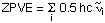
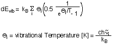

A detailed account of how thermochemical values are calculated in Gaussian
by by Joseph W. Ochterski (Gaussian Inc.) is available
here as pdf and html
file.
A number of constants and conversion factors helpful in thermochemical calculations can be
found here.
The thermochemical analysis in Gaussian is based on the harmonic vibrational frequencies
calculated before and predicts by default thermochemical values for 298.15K and 1.0 atm.
The key thermochemical properties are:
| Etot | the total electronic energy Etot as calculated by a given theoretical model. This is the
energy of the molecular system under study relative to separate nuclei and electrons.
Remember that semiempirical methods such as AM1 use a different point of reference and
produce heats of formation. Taking the dihydrogen molecule H2 as calculated
at the Hartree-Fock level in combination with the standard 6-31G basis set (HF/6-31G) as an example,
the total energy of the system at its equilibrium position (H-H = 72.996 pm) amounts to
-1.12682782541 hartree. This result appears in the output file before any other thermochemical
data as:SCF Done: E(RHF) = -1.12682782541 A.U. after 4 cycles |
|
| ZPVE | the zero point vibrational energy ZPVE (or ZPE) results from the vibrational motion of
molecular systems even at 0 K and is calculated for a harmonic oscillator
model as a sum of contributions from all i vibrational modes of the system:  For the H2 example cited above there is only one vibrational mode with a wavenumber of 4646.1744 cm-1. With 0.5hc = 2.27827*10-6 cm hartree we obtain a zero point vibrational energy of 0.010585 hartree. This result is given in the Gaussian output file as: Zero-point correction= 0.010585 (Hartree/Particle)Multiplication with Avogadro's number and conversion to Joules or calories gives molar values listed as:
Zero-point vibrational energy 27790.3 (Joules/Mol)
6.64204 (Kcal/Mol)
|
|
| E0 | The zero point corrected total energy E0 is the sum of the total electronic energy
Etot and the zero point vibrational energy ZPVE: E0 = Etot + ZPVE For the H2 example, this result is listed in the output file as: Sum of electronic and zero-point Energies= -1.116243 |
|
| E(0-298) | is the thermal correction to the internal energy at 298.15K and is given as a sum over
four components for contributions from electronic, vibrational, rotational and translational
degrees of freedom: E(0-298) = dEel + dEvib + dErot + dEtrans The first of these terms dEel describes the contribution of electronically excited states to the internal energy of the system. With excitation energies even to the first electronically excited state being much higher than kBT at room termperature and with the zero point of energy taken as the electronic energy of the ground electronic state, there is usually no contribution to the internal energy from occupation of electronically excited states at room termperature. By far the largest contribution to the internal energy at room temperature stems from vibrational degrees of freedom, the zero point vibrational energy being one important component. The occupation of higher vibrational levels gives rise to an additional contribution dEvib which can be calculated according to:  The vibrational temperature of each mode i is not just a helpful quantity for evaluation of E(0-298) using the above equation, but also serves as a qualitative guideline for the extend of thermal excitation of vibrational modes. For the example of H2 there is only one vibrational mode and thus only one vibrational temperature listed in the output file:
VIBRATIONAL TEMPERATURES: 6684.77
(KELVIN)
This vibrational temperatur is so much larger than 298.15 K that vibrational excitation can
safely be excluded. The internal energy at 298.15 K due to vibrational motion is therefore
practically identical to the zero point vibrational energy of 6.642 kcal/mol.The spacing of rotational energy levels is much narrower than that of vibrational energy levels. An approximate formula for the contribution of rotational energy levels to the internal energy at room temperature (or above) is: dErot = RT This implies that there is no rotational motion at 0 K and that the contribution of rotational motion to the internal energy at 298.15K is 0.5925 kcal/mol (or 2.479 kJ/mol). The translational energy of an ideal gas dEtrans at temperature T is given (in molar quantities) as dEtrans = 3/2 RT implying that at 0 K there is no contribution to the internal energy from translational motion, but that the translational energy increases linearly with increasing absolute temperature. At 298.15 K this amounts to 0.8887 kcal/mol (or 3.7185 kJ/mol). The overall value for E(0-298) is not listed explicitly in the output file, but appears together with the ZPVE as "Thermal correction to Energy": Zero-point correction= 0.010585 (Hartree/Particle) Thermal correction to Energy= 0.012945 The individual components of the internal energy at 298.15K are listed a few lines later in the following format (together with contributions to heat capacities cv and entropies S:
E (Thermal) CV S
KCAL/MOL CAL/MOL-KELVIN CAL/MOL-KELVIN
TOTAL 8.123 4.968 31.063
ELECTRONIC 0.000 0.000 0.000
TRANSLATIONAL 0.889 2.981 28.080
ROTATIONAL 0.592 1.987 2.983
VIBRATIONAL 6.642 0.000 0.000
|
|
| E298 | is the sum of E0 and E(0-298). For H2 this appears in the output file as:Sum of electronic and thermal Energies= -1.113883 |
|
| H298 | calculation of the enthalpy at 298.15K H298 is based on the equation: H298 = E298 + pv = E298 + RT the latter equality only being valid for molar quantities of an ideal gas (kBT being used for one particle). At 298.15 K kBT equates to 0.0009442 hartree and this is the only difference between the thermal energies and enthalpies listed in the output as: Sum of electronic and thermal Energies= -1.113883 Sum of electronic and thermal Enthalpies= -1.112938 |
|
| G298 | the free enthalpy (or Gibbs free energy) at 298.15K G298 is obtained as
H298 -T*S298 and appears in the output files as:
Sum of electronic and thermal Free Energies= -1.127698 |
last changes: 11.11.2004, HZ questions & comments to: zipse@cup.uni-muenchen.de